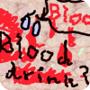

I was drawing on, what is the thing called? My daddy says it's a wacom tablet he got from his dad. Anyways...
I was thinking about halloween a while ago, and I thought about Vampires, and tricking a real person into drinking a blood drink. But instead of drawing a vampire and a person, one paying, one giving, I instead did a poster.